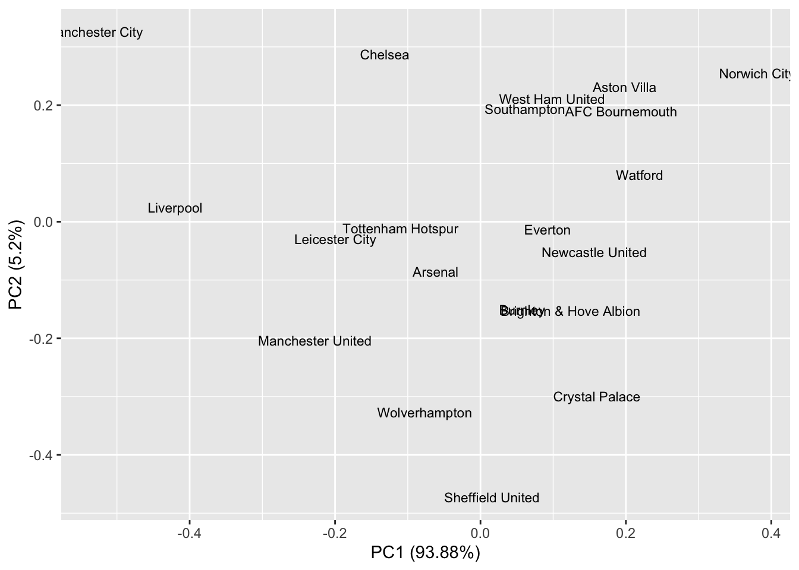
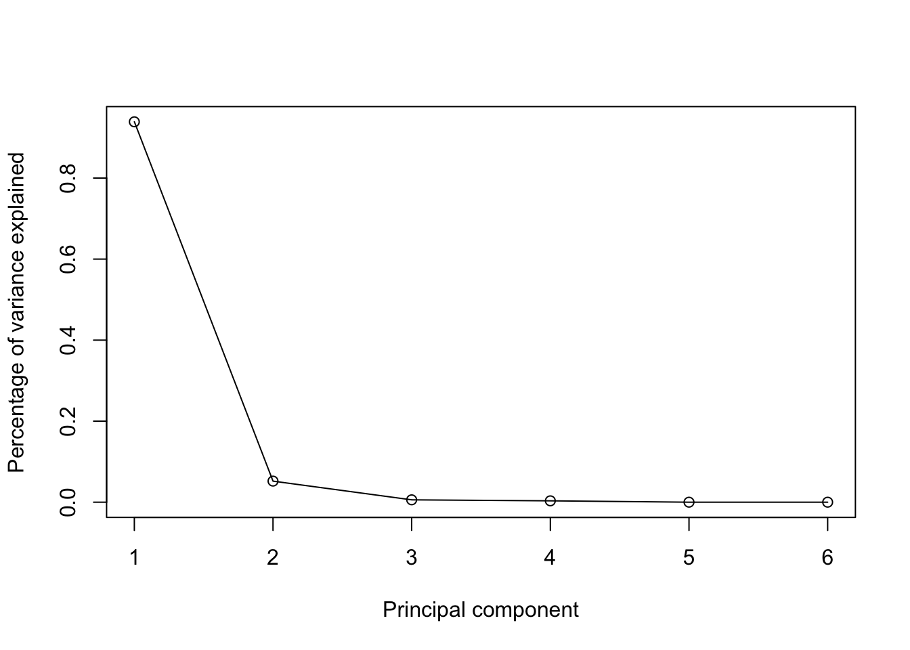
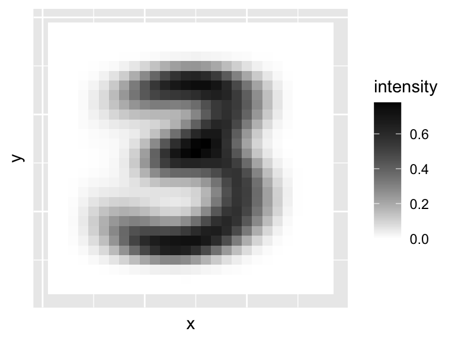

3.2 PCA: a formal description with proofs
Let’s now summarize what we’ve said so far and prove some results about principal component analysis.
Let \(\mathbf x_1, \ldots , \mathbf x_n\) denote a sample of vectors in \(\mathbb{R}^p\) with sample mean vector \(\bar{\mathbf x}\) and sample covariance matrix \(\mathbf S\). Suppose \(\mathbf S=\mathbf X^\top \mathbf H\mathbf X\) has spectral decomposition (see Proposition 2.3) \[\begin{equation} \mathbf S=\mathbf V\boldsymbol \Lambda\mathbf V^\top = \sum_{j=1}^p \lambda_j \mathbf v_j \mathbf v_j^\top, \tag{3.2} \end{equation}\] where the eigenvalues are \(\lambda_1 \geq \lambda_2 \geq \lambda_p \geq 0\) with \(\boldsymbol \Lambda=\text{diag}\{\lambda_1, \ldots, \lambda_p\}\), and \(\mathbf V\) contains the eigenvectors of \(\mathbf S\). If \(\mathbf S\) is of full rank, then \(\lambda_p>0\). If \(\mathbf S\) is rank \(r\), with \(r<p\), then \(\lambda_{r+1}=\ldots, \lambda_p=0\) and we can truncate \(\mathbf V\) to consider just the first \(r\) columns.
The principal components of \(\mathbf X\) are defined sequentially. If the \(\mathbf v_k\) is value of \(\mathbf u\) that maximizes the objective for the \(k^{th}\) problem (for \(k<j\)), then the \(j^{th}\) principal component is the solution to the following optimization problem: \[\begin{equation} \max_{\mathbf u: \, \vert \vert \mathbf u\vert \vert =1}\mathbf u^\top \mathbf S\mathbf u \tag{3.3} \end{equation}\] subject to \[\begin{equation} \mathbf v_k^\top \mathbf u=0, \qquad k=1, \ldots , j-1. \tag{3.4} \end{equation}\] (for \(j=1\) there is no orthogonality constraint).
Proof. We can prove this using the method of Lagrange multipliers. For \(j=1\) our objective is \[\mathcal{L} = \mathbf u^\top \mathbf S\mathbf u+\lambda(1-\mathbf u^\top \mathbf u)\] Differentiating (see 1.1.4) with respect to \(\mathbf u\) and setting the derivative equal to zero gives \[2\mathbf S\mathbf u-2\lambda \mathbf u=0\] Rearranging we see that \(\mathbf u\) must satify \[\mathbf S\mathbf u=\lambda \mathbf u\mbox{ with } \mathbf u^\top \mathbf u=1\] i.e., \(\mathbf u\) is a unit eigenvector of \(\mathbf S\). Substituting this back in to the objective we see \[\mathbf u\mathbf S\mathbf u= \lambda\] and so we must choose \(\mathbf u=\mathbf v_1\), the eigenvector corresponding to the largest eigenvalue of \(\mathbf S\).
We now proceed inductively and assume the result is true for \(k=1, \ldots, j-1\). The Lagrangian for the \(j^{th}\) optimization problem is \[\mathcal{L} = \mathbf u^\top \mathbf S\mathbf u+\lambda(1-\mathbf u^\top \mathbf u) +\sum_{k=1}^{j-1}\mu_k (0-\mathbf u^\top \mathbf v_k)\] where we now have \(j\) Lagrange multipliers \(\lambda, \mu_1, \ldots, \mu_{j-1}\) - one for each constraint. Differentiating with respect to \(\mathbf u\) and setting equal to zero gives \[0 = 2\mathbf S\mathbf u- 2\lambda \mathbf u- \sum_{k=1}^{j-1} \mu_k\mathbf v_k=0 \] If we left multiply by \(\mathbf v_l^\top\) we get \[2\mathbf v_l^\top \mathbf S\mathbf u- 2\lambda \mathbf v_l \mathbf u- \sum \mu_k \mathbf v_l^\top \mathbf v_k =0\] We know \(\mathbf v_l\) is an eigenvector of \(\mathbf S\) and so \(\mathbf S\mathbf v_l=\lambda_l \mathbf v_l\) and hence \(\mathbf v_k \mathbf S\mathbf u=0\) as \(\mathbf v_l^\top \mathbf u=0\). Also \[\mathbf v_l^\top\mathbf v_k=\begin{cases}1 &\mbox{ if } k=l\\ 0 &\mbox{ otherwise, }\end{cases}\] and thus we’ve shown that \(\mu_l=0\) for \(l=1, \ldots, j-1\). So again we have that \[\mathbf S\mathbf u= \lambda \mathbf u\] i.e., \(\mathbf u\) must be a unit eigenvector of \(\mathbf S\). It only remains to show which eigenvector it is. Because \(\mathbf u\) must be orthogonal to \(\mathbf v_1, \ldots, \mathbf v_{j-1}\), and as \(\mathbf v_l^\top \mathbf S\mathbf v_l = \lambda_l\), we must choose \(\mathbf u=\mathbf v_j\), the eigenvector corresponding to the \(j^{th}\) largest eigenvalue.3.2.1 Properties of principal components
For \(j=1, \ldots , p\), the scores of the \(j^{th}\) principal component (PC) are given by \[ y_{ij}=\mathbf v_j^\top(\mathbf x_i - \bar{\mathbf x}), \qquad i=1, \ldots , n. \] The \(j^{th}\) eigenvector \(\mathbf v_j\) is sometimes referred to as the vector of loadings for the \(j^{th}\) PC. Note that if \(\operatorname{rank}(S)=r<p\), then the \(r+1^{th}, \ldots, p^{th}\) scores are meaningless, as they will all be zero.
In vector notation \[ \mathbf y_i=( y_{i1}, y_{i2}, \ldots , y_{ip})^\top = \mathbf V^\top (\mathbf x_i -\bar{\mathbf x}), \qquad i=1, \ldots ,n. \] In matrix form, the full set of PC scores is given by \[ \mathbf Y= [\mathbf y_1 , \ldots , \mathbf y_n]^\top =\mathbf H\mathbf X\mathbf V. \]
If \(\tilde{\mathbf X}=\mathbf H\mathbf X\) is the column centered data matrix, with singular value decomposition \(\tilde{\mathbf X}=\mathbf U\boldsymbol{\Sigma}\mathbf V^\top\) with \(\mathbf V\) as in Equation (3.2), then \[\mathbf Y= \tilde{\mathbf X}\mathbf V= \mathbf U\boldsymbol{\Sigma}.\]
The transformed variables \(\mathbf Y= \mathbf H\mathbf X\mathbf V\) have some important properties which we collect together in the following proposition.
Proposition 3.2 The following results hold:
The sample mean vector of \(\mathbf y_1, \ldots , \mathbf y_n\) is the zero vector: \(\bar{\mathbf y}={\mathbf 0}_p\)
The sample covariance matrix of \(\mathbf y_1, \ldots, \mathbf y_n\) is \[\Lambda = \operatorname{diag}(\lambda_1, \ldots, \lambda_p)\] i.e., for each fixed \(j\), the sample variance of \(y_{ij}\) is \(\lambda_j\), and \(y_{ij}\) is uncorrelated with with \(y_{ik}\) for \(j\not = k\).
For \(j\leq k\) the sample variance of \(\{y_{ij}\}_{i=1, \ldots , n}\) is greater than or equal to the sample variance of \(\{y_{ik}\}_{i=1, \ldots , n}\). \[\mathbf v_1^\top \mathbf S\mathbf v_1 \geq \mathbf v_2^\top \mathbf S\mathbf v_2 \geq \ldots \geq \mathbf v_p^\top \mathbf S\mathbf v_p\geq 0\] Note that if \(\operatorname{rank}(S)=r<p\), then \(\mathbf v_k^\top \mathbf S\mathbf v_k = 0\) for \(k=r+1, \ldots, p\).
The sum of the sample variances is equal to the trace of \(\mathbf S\) \[\sum_{j=1}^p \mathbf v_j^\top \mathbf S\mathbf v_j = \sum_{j=1}^p \lambda_j = \text{tr}(\mathbf S)\]
- The product of the sample variances is equal to the determinant of \(\mathbf S\) \[\prod_{j=1}^p \mathbf v_j^\top \mathbf S\mathbf v_j = \prod_{j=1}^p \lambda_j = |\mathbf S|.\]
Proof. For i. \[\bar{\mathbf y} = \frac{1}{n}\sum_{i=1}^n \mathbf V^\top(\mathbf x_i-\bar{\mathbf x}) = \frac{1}{n} \mathbf V^\top\sum_{i=1}^n(\mathbf x_i-\bar{\mathbf x}) =\boldsymbol 0.\]
For 2. the sample covariance matrix of \(\mathbf y_1, \ldots, \mathbf y_n\) is \[\begin{align*} \frac{1}{n}\sum_{i=1}^n \mathbf y_i \mathbf y_i^\top &=\frac{1}{n} \sum \mathbf V^\top (\mathbf x_i-\bar{\mathbf x})(\mathbf x_i - \mathbf x)^\top \mathbf V\\ &=\mathbf V^\top \mathbf S\mathbf V\\ &=\mathbf V^\top \mathbf V\boldsymbol \Lambda\mathbf V^\top \mathbf V\mbox{ substiting the spectral decomposition for }\mathbf S\\ &=\boldsymbol \Lambda \end{align*}\]
is a consequence 2. and of ordering the eigenvalues in decreasing magnitude.
follows from lemma 1.1 and the spectral decomposition of \(\mathbf S\): \[\operatorname{tr}(\mathbf S) = \operatorname{tr}(\mathbf V\boldsymbol \Lambda\mathbf V^\top) =\operatorname{tr}(\mathbf V^\top \mathbf V\boldsymbol \Lambda)=\operatorname{tr}(\boldsymbol \Lambda)=\sum\lambda_i\]
- follows from 2.2.
From these properties we say that a proportion \[\frac{\lambda_j}{\lambda_1 + \ldots + \lambda_p}\] of the variability in the sample is ‘explained’ by the \(j^{th}\) PC.
One tool for looking at the contributions of each PC is to look at the scree plot which plots the percentage of variance explained by PC \(j\) against \(j\). We’ll see examples of scree plots below.
3.2.2 Example: Football
We can apply PCA to a football league table where \(W\), \(D\), \(L\) are the number of matches won, drawn and lost and \(G\) and \(GA\) are the goals scored for and against, and \(GD\) is the goal difference (\(G-GA\)). An extract of the table for the 2019-2020 Premier League season is:
| Team | W | D | L | G | GA | GD |
|---|---|---|---|---|---|---|
| Liverpool | 32 | 3 | 3 | 85 | 33 | 52 |
| Manchester City | 26 | 3 | 9 | 102 | 35 | 67 |
| Manchester United | 18 | 12 | 8 | 66 | 36 | 30 |
| Chelsea | 20 | 6 | 12 | 69 | 54 | 15 |
| Leicester City | 18 | 8 | 12 | 67 | 41 | 26 |
| Tottenham Hotspur | 16 | 11 | 11 | 61 | 47 | 14 |
| Wolverhampton | 15 | 14 | 9 | 51 | 40 | 11 |
| Arsenal | 14 | 14 | 10 | 56 | 48 | 8 |
| Sheffield United | 14 | 12 | 12 | 39 | 39 | 0 |
| Burnley | 15 | 9 | 14 | 43 | 50 | -7 |
The sample mean vector is
\[\bar{\mathbf x} =\begin{pmatrix}14.4 \\9.2 \\14.4 \\51.7 \\51.7 \\0 \\\end{pmatrix}.\]
Note that the total goals scored must equal the total goals conceded, and that the sum of the goal differences must be \(0\). The sample covariance matrix is
\[\begin{equation} \mathbf S= \begin{pmatrix}38.3&-9.18&-29.2&103&-57&160 \\-9.18&10.2&-0.98&-27.5&-2.24&-25.2 \\-29.2&-0.98&30.1&-75.3&59.3&-135 \\103&-27.5&-75.3&336&-147&483 \\-57&-2.24&59.3&-147&134&-281 \\160&-25.2&-135&483&-281&764 \\\end{pmatrix} \tag{3.5} \end{equation}\]
The eigenvalues of \(\mathbf S\) are \[\boldsymbol \Lambda= \text{diag}\begin{pmatrix}1300&71.9&8.05&4.62&-2.65e-14&-3.73e-14 \\\end{pmatrix}\]
Note that we have two zero eigenvalues (which won’t be computed as exactly zero because of numerical rounding errors) because two of our variables are a linear combinations of the other variables, \(W+D+L = 38\) and \(GD=G-GA\). The corresponding eigenvectors are \[\mathbf V= [\mathbf v_1 \ldots \mathbf v_6] =\begin{pmatrix}-0.166&0.0262&-0.707&0.373&0.222&-0.533 \\0.0282&-0.275&0.661&0.391&0.222&-0.533 \\0.138&0.249&0.0455&-0.764&0.222&-0.533 \\-0.502&0.6&0.202&0.117&0.533&0.222 \\0.285&0.701&0.11&0.286&-0.533&-0.222 \\-0.787&-0.101&0.0915&-0.169&-0.533&-0.222 \\\end{pmatrix}\]
The proportion of variability explained by each of the PCs is: \[ \begin{pmatrix}0.939&0.052&0.00583&0.00334&-1.92e-17&-2.7e-17 \\\end{pmatrix} \]
There is no point computing the scores for PC 5 and 6, because these do not explain any of the variability in the data. Similarly, there is little value in computing the scores for PCs 3 & 4 because they account for less than 1% of the variability in the data.
We can, therefore, choose to compute only the first two PC scores. We are reducing the dimension of our data set from \(p=5\) to \(p=2\) while still retaining 99% of the variability. The first PC score/transformed variable is given by: \[\begin{align*} y_{i1} &= -0.17(W_i-\bar{W}) +0.03(D_i-\bar{D}) +0.14(L_i-\bar{L})\\ & \qquad +-0.5(G_i-\bar{G}) +0.28(GA_i-\bar{GA})+-0.79(GD_i-\bar{GD}), \end{align*}\] and similarly for PC 2.
The first five rows of our revised ‘league table’ are now| Team | PC1 | PC2 |
|---|---|---|
| Liverpool | -67.6 | 0.9 |
| Manchester City | -85.6 | 12.3 |
| Manchester United | -36.7 | -7.7 |
| Chelsea | -21.2 | 10.9 |
| Leicester City | -32.2 | -1.1 |
Now that we have reduced the dimension to \(p=2\), we can visualise the differences between the teams.

We might interpret the PCs as follows. The first PC seems to measure the difference in goals scored and conceded between teams. Low values of PC1 indicate good peformance, and high values poor performance. Teams are rewarded with -0.79 for each positive goal difference, and -0.5 for each goal scored, whilst being penalised by 0.28 for every goal they concede. So a team with a large negative PC1 score tends to score lots of goals and concede few. If we rank teams by their PC1 score, and compare this with the rankings using 3 points for a win and 1 point for a draw we get a different ranking of the teams.
| PC1 | PC2 | |
|---|---|---|
| Manchester City | -85.59 | 12.35 |
| Liverpool | -67.64 | 0.93 |
| Manchester United | -36.66 | -7.73 |
| Leicester City | -32.16 | -1.13 |
| Chelsea | -21.19 | 10.90 |
The second PC has a strong positive loading for both goals for and against. A team with a large positive PC 2 score was, therefore, involved in matches with lots of goals. We could, therefore, interpret PC 2 as an ‘entertainment’ measure, ranking teams according to their involvement in high-scoring games.
The above example raises the question of how many PCs should we use in practice. If we reduce the dimension to \(p=1\) then we can rank observations and analyse our new variable with univariate statistics. If we reduce the dimension to \(p=2\) then it is still easy to visualise the data. However, reducing the dimension to \(p=1\) or \(p=2\) may involve losing lots of information and a sensible answer should depend on the objectives of the analysis and the data itself.
The scree graph for the football example is:

There are many possible methods for choosing the number of PCs to retain for analysis, including:
- retaining enough PCs to explain, say, 90% of the total variation;
- retaining PCs where the eigenvalue is above the average.
To retain enough PCs to explain 90% of the total variance, would require us to keep just a single PCs in this case.
3.2.3 PCA based on \(\mathbf R\) versus PCA based on \(\mathbf S\)
Recall the distinction between the sample covariance matrix \(\mathbf S\) and the sample correlation matrix \(\mathbf R\). Note that all correlation matrices are also covariance matrices, but not all covariance matrices are correlation matrices. Before doing PCA we must decide whether to do PCA based on \(\mathbf S\) or \(\mathbf R\)? As we will see later
- PCA based on \(\mathbf R\) (but not \(\mathbf S\)) is scale invariant, whereas
- PCA based on \(\mathbf S\) is invariant under orthogonal rotation.
If the original \(p\) variables represent very different types of quantity or show marked differences in variances, then it will usually be better to use \(\mathbf R\) rather than \(\mathbf S\). However, in some circumstances, we may wish to use \(\mathbf S\), such as when the \(p\) variables are measuring similar entities and the sample variances are not too different.
Given that the required numerical calculations are easy to perform in R, we might wish to do it both ways and see if it makes much difference. To use the correlation matrix \(\mathbf R\), we just add the option scale=TRUE when using the prcomp command.
3.2.3.1 Football example continued
If we repeat the analysis of the football data using \(\mathbf R\) instead of \(\mathbf S\), we get find principal components:
\[\begin{align*} \boldsymbol \Lambda&= \text{diag}\begin{pmatrix}4.51&1.25&0.156&0.0863&3.68e-32&2.48e-33 \\\end{pmatrix}\\ \;\\ \mathbf V= [\mathbf v_1 \ldots \mathbf v_6] &=\begin{pmatrix}-0.456&0.149&-0.342&-0.406&0.466&0.52 \\0.143&-0.844&0.344&-0.143&0.24&0.268 \\0.432&0.321&0.186&0.541&0.413&0.461 \\-0.438&0.214&0.7&-0.0181&0.389&-0.348 \\0.419&0.342&0.386&-0.671&-0.245&0.22 \\-0.466&-0.00136&0.302&0.269&-0.586&0.525 \\\end{pmatrix} \end{align*}\]
The effect of using \(\mathbf R\) is to standardize each of the original variables to have variance 1. The first PC now has loadings which are more evenly balanced across the 6 original variables.
Teams will have a small value of PC1 score if they won lots, lost rarely, scored a lot, and conceded rarely. In other words, PC1 is a complete measure of overall performance. If we look at the league table based on ordering according to PC1 we get a table that looks more like the original table.
| PC1 | PC2 | |
|---|---|---|
| Liverpool | -4.70 | 1.20 |
| Manchester City | -4.38 | 1.65 |
| Manchester United | -2.01 | -1.29 |
| Chelsea | -1.29 | 1.08 |
| Leicester City | -1.66 | 0.12 |
| Tottenham Hotspur | -0.91 | -0.65 |
| Wolverhampton | -0.82 | -1.88 |
| Arsenal | -0.46 | -1.56 |
| Sheffield United | -0.18 | -1.38 |
| Burnley | 0.18 | -0.10 |
Overall for these data, doing PCA with \(\mathbf R\) instead of \(\mathbf S\) better summarizes the data (although this is just my subjective opinion - you may feel differently).

3.2.4 Population PCA
So far we have considered sample PCA based on the sample covariance matrix or sample correlation matrix: \[ \mathbf S=\frac{1}{n}\sum_{i=1}^n (\mathbf x_i-\bar{\mathbf x})(\mathbf x_i-\bar{\mathbf x})^\top. \]
We note now that there is a population analogue of PCA based on the population covariance matrix \(\boldsymbol{\Sigma}\). Although the population version of PCA is not of as much direct practical relevance as sample PCA, it is nevertheless of conceptual importance.
Let \(\mathbf x\) denote a \(p \times 1\) random vector with \({\mathbb{E}}(\mathbf x)={\pmb \mu}\) and \({\mathbb{V}\operatorname{ar}}(\mathbf x)={\pmb \Sigma}\). As defined, \(\pmb \mu\) is the population mean vector and \(\pmb \Sigma\) is the population covariance matrix.
Since \(\pmb \Sigma\) is symmetric, the spectral decomposition theorem tells us that \[ {\pmb \Sigma}=\sum_{j=1}^p \check{\lambda}_j \check{\mathbf v}_j \check{\mathbf v}_j^\top=\check{\mathbf V} \check{\boldsymbol \Lambda}\check{\mathbf V}^\top \] where the ‘check’ symbol \(\quad \check{} \quad\) is used to distinguish population quantities from their sample analogues.
Then:
- the first population PC is defined by \(Y_1=\check{\mathbf v}_1^\top (\mathbf x-{\pmb \mu})\);
- the second population PC is defined by \(Y_2=\check{\mathbf v}_2^\top (\mathbf x-{\pmb \mu})\);
- \(\ldots\)
- the \(p\)th population PC is defined by \(Y_p=\check{\mathbf v}_p^\top (\mathbf x-{\pmb \mu})\).
The \(Y_1, \ldots , Y_p\) are random variables, unlike the sample PCA case, where the \(y_{ij}\) are observed quantities. In the sample PCA case, the \(y_{ij}\) can often be regarded as the observed values of random variables.
In matrix form, the above definitions can be summarised by writing \[ \mathbf y=\begin{pmatrix} Y_1 \\ Y_2 \\ ... \\...\\Y_p \end{pmatrix} = \check{\mathbf V}^\top (\mathbf x-{\pmb \mu}). \]
The population PCA analogues of the sample PCA properties listed in Proposition 3.2 are now given. Note that the \(Y_j\)’s are random variables as opposed to observed values of random variables.
Proposition 3.3 The following results hold for the random variables \(Y_1, \ldots , Y_p\) defined above.
\({\mathbb{E}}(Y_j)=0\) for \(j=1, \ldots , p\);
\({\mathbb{V}\operatorname{ar}}(Y_j)=\check{\lambda}_j\) for \(j=1,\ldots, p\);
\({\mathbb{C}\operatorname{ov}}(Y_j,Y_k)=0\) if \(j \neq k\);
\({\mathbb{V}\operatorname{ar}}(Y_1) \geq {\mathbb{V}\operatorname{ar}}(Y_2) \geq \cdots \geq {\mathbb{V}\operatorname{ar}}(Y_p) \geq 0\);
\(\sum_{j=1}^p {\mathbb{V}\operatorname{ar}}(Y_j)=\sum_{j=1}^p \check{\lambda}_j=\text{tr}(\boldsymbol{\Sigma})\);
- \(\prod_{j=1}^p \text{Var}(Y_j)=\prod_{j=1}^p \check{\lambda}_j=\vert \boldsymbol{\Sigma}\vert\).
Note that, defining \(\mathbf y=(Y_1, \ldots , Y_p)^\top\) as before, part 1. implies that \({\mathbb{E}}(\mathbf y)={\mathbf 0}_p\) and parts 2. and 3. together imply that \[ \text{Var}(\mathbf y)=\boldsymbol \Lambda\equiv \text{diag}(\check{\lambda}_1, \ldots , \check{\lambda}_p). \]
Consider now a repeated sampling framework in which we assume that \(\mathbf x_1, \ldots , \mathbf x_n\) are IID random vectors from a population with mean vector \(\pmb \mu\) and covariance matrix \(\boldsymbol{\Sigma}\).
What is the relationship between the sample PCA based on the sample of observed vectors \(\mathbf x_1, \ldots , \mathbf x_n\), and the population PCA based on the unobserved random vector \(\mathbf x\), from the same population?
If the elements of \(\boldsymbol{\Sigma}\) are all finite, then as \(n\) increases, the elements of the sample covariance matrix \(\mathbf S\) will converge to the corresponding elements of the population covariance matrix \(\boldsymbol{\Sigma}\). Consequently, we expect the principal components from sample PCA to converge to the population PCA values as \(n\) grows large. Justification of this statement comes from the weak law of large numbers applied to the components of \(\Sigma\), but the details are beyond the scope of this module.
3.2.5 PCA under transformations of variables
We’ll now consider what happens to PCA when the data are transformed in various ways.
Addition transformation
Firstly, consider the transformation of addition where, for example, we add a fixed amount to each variable. We can write this transformation as \(\mathbf z_i = \mathbf x_i + \mathbf c\), where \(\mathbf c\) is a fixed vector. Under this transformation the sample mean changes, \(\bar{\mathbf z} = \bar{\mathbf x} + \mathbf c\), but the sample variance remains \(\mathbf S\). Consequently, the eigenvalues and eigenvectors remain the same and, therefore, so do the principal component scores/transformed vasriables, \[\mathbf y_i = \mathbf V^\top (\mathbf z_i - \bar{\mathbf z}) = \mathbf V^\top(\mathbf x_i + \mathbf c- (\bar{\mathbf x} + \mathbf c)) = \mathbf V^\top (\mathbf x_i - \bar{\mathbf x}).\] We say that the principal components are invariant under the addition transformation. An important special case is to choose \(\mathbf c= -\bar{\mathbf x}\) so that the PC scores are simply \(\mathbf y_i = \mathbf V^\top \mathbf z_i\).
Scale transformation
Secondly, we consider the scale transformation where each variable is multiplied by a fixed amount. A scale transformation occurs more naturally when we convert units of measurement from, say, metres to kilometres. We can write this transformation as \(\mathbf z_i = \mathbf D\mathbf x_i\), where \(\mathbf D\) is a diagonal matrix with positive elements. Under this transformation the sample mean changes from \(\bar{\mathbf x}\) to \(\bar{\mathbf z} = \mathbf D\bar{\mathbf x}\), and the sample covariance matrix changes from \(\mathbf S\) to \(\mathbf D\mathbf S\mathbf D\). Consequently, the principal components also change.
This lack of scale-invariance is undesirable. For example, if we analysed data that included some information on distances, we don’t want the answer to depend upon whether we use km, metres, or miles as the measure of distance. One solution is to scale the data using \[ \mathbf D= \text{diag}(s_{11}^{-1/2}, \ldots , s_{pp}^{-1/2}), \] where \(s_{ii}\) is the \(i\)th diagonal element of \(\mathbf S\). In effect, we have standardised all the new variables to have variance 1. In this case the sample covariance matrix of the \(\mathbf z_i\)’s is simply the sample correlation matrix \(\mathbf R\) of the original variables, \(\mathbf x_i\). Therefore, we can carry out PCA on the sample correlation matrix, \(\mathbf R\), which is invariant to changes of scale.
In summary: \(\mathbf R\) is scale-invariant while \(\mathbf S\) is not. To do PCA on \(\mathbf R\) in R we use the option scale=TRUE in the prcomp command.
We saw an example of this in section 3.2.3 with the football data. Because the sample variances of \(G\) and \(GA\) are much larger than the sample variances of \(W\), \(D\) and \(L\), doing PCA with \(\mathbf R\) instead of \(\mathbf S\) completely changed the analysis.
Orthogonal transformations
Thirdly, we consider a transformation by an orthogonal matrix, \(\stackrel{p \times p}{\mathbf A}\), such that \(\mathbf A\mathbf A^\top = \mathbf A^\top \mathbf A= \mathbf I_p\), and write \(\mathbf z_i = \mathbf A\mathbf x_i\). This is equivalent to rotating and/or reflecting the original data.
Let \(\mathbf S\) be the sample covariance matrix of the \(\mathbf x_i\) and let \(\mathbf T\) be the sample covariance matrix of the \(\mathbf z_i\). Under this transformation the sample mean changes from \(\bar{\mathbf x}\) to \(\bar{\mathbf z} = \mathbf A\bar{\mathbf x}\), and the sample covariance matrix \(\mathbf S\) changes from \(\mathbf S\) to \(\mathbf T= \mathbf A\mathbf S\mathbf A^\top\).
However, if we write \(\mathbf S\) in terms of its spectral decomposition \(\mathbf S= \mathbf V\boldsymbol \Lambda\mathbf V^\top\), then \(\mathbf T= \mathbf A\mathbf V\boldsymbol \Lambda\mathbf V^\top \mathbf A^\top = \mathbf B\boldsymbol \Lambda\mathbf B^\top\) where \(\mathbf B= \mathbf A\mathbf V\) is also orthogonal. It is therefore apparent that the eigenvalues of \(\mathbf T\) are the same as those of \(\mathbf S\); and the eigenvectors of \(\mathbf T\) are given by \(\mathbf b_j\) where \(\mathbf b_j = \mathbf A\mathbf v_j\), \(j=1,\ldots,p\). The PC scores of the rotated variables are \[ \mathbf y_i = \mathbf B^\top (\mathbf z_i - \bar{\mathbf z}) = \mathbf V^\top \mathbf A^\top \mathbf A(\mathbf x_i - \bar{\mathbf x}) = \mathbf V_1^\top (\mathbf x_i - \bar{\mathbf x}),\] and so they are identical to the PC scores of the original variables.
Therefore, under an orthogonal transformation the eigenvalues and PC scores are unchanged; the PCs are orthogonal transformations of the original PCs. We say that the principal components are equivariant with respect to orthogonal transformations.